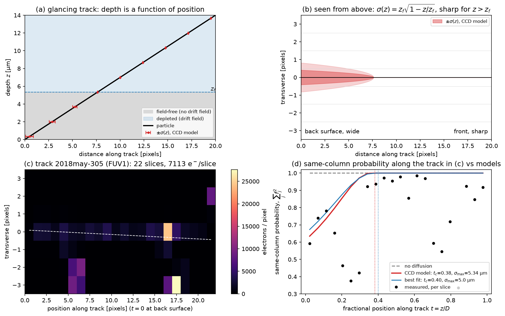
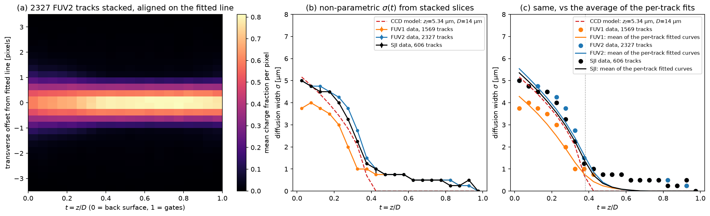
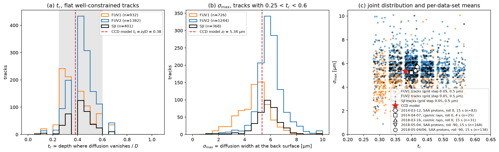
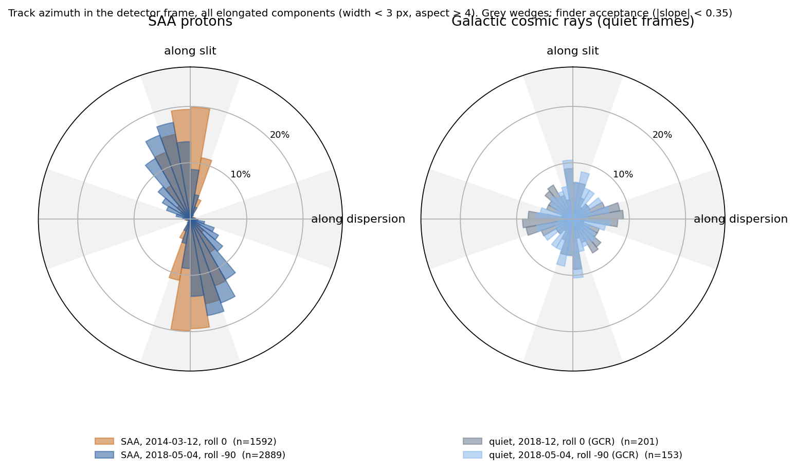
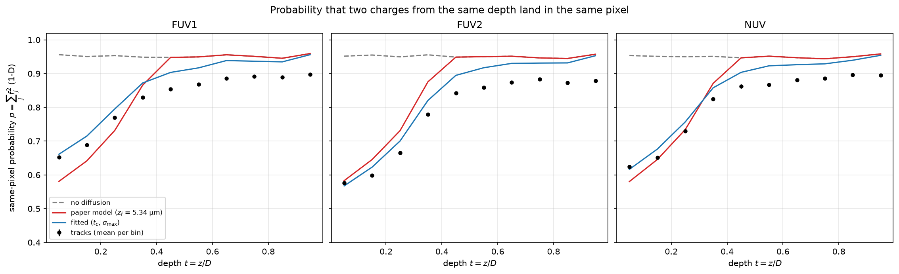
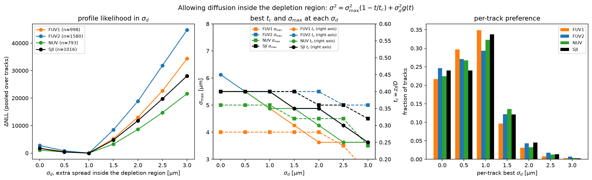
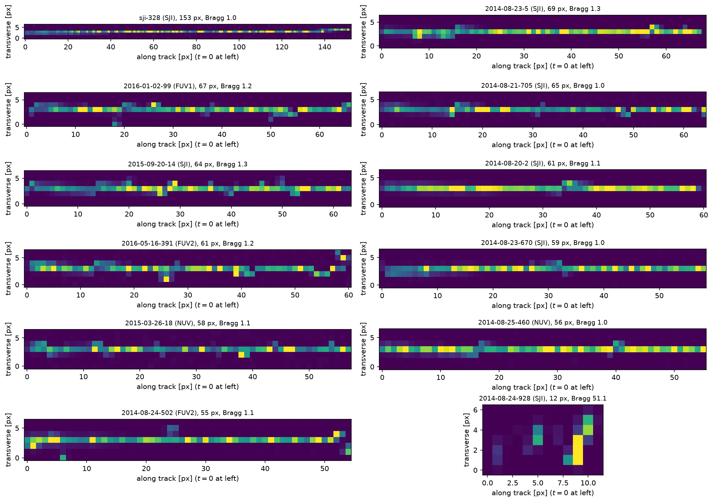

Charge diffusion from glancing particle tracks#
A particle that crosses the silicon of a back-illuminated CCD at a shallow angle samples every depth along its length, so the charge cloud it leaves behind maps the diffusion width against depth in a single frame. This report measures the field-free diffusion of the three IRIS CCDs (FUV1, FUV2 and SJI) from such tracks and compares it with the charge-diffusion model used in the article, \(\sigma(z) = z_f \sqrt{1 - z / z_f}\) for \(z < z_f\) and zero in the depletion region. Depth below the back surface is quoted as a fraction of the sensor thickness throughout, \(t = z / D\), so the field-free layer ends at the critical depth \(t_c = z_f / D\).
It is the exploratory analysis behind this article, run on the track
cutouts and fits distributed with the ccd_diffusion.tracks subpackage, so every
figure below except the azimuth census in Section 4 is regenerated when this
documentation is built.
The four spectrograph data sets and the SJI data set were taken between 2014 and 2018,
mostly inside the South Atlantic Anomaly (SAA), from level-1 frames at 1x1 binning.
[1]:
import warnings
import concurrent.futures
import numpy as np
import matplotlib.pyplot as plt
import astropy.units as u
import named_arrays as na
with warnings.catch_warnings():
# the article's variables are evaluated on import, and a few of them divide by zero harmlessly
warnings.simplefilter("ignore", RuntimeWarning)
import ccd_diffusion
plt.rcParams["figure.dpi"] = 150
[2]:
tracks = ccd_diffusion.tracks
fits = tracks.fits()
flat = [f for f in fits if f.flat]
tc_paper, sm_paper = tracks.paper_model()
thickness = ccd_diffusion.ccd().thickness_substrate
D = thickness.to_value(u.um)
zf = sm_paper.to_value(u.um)
pixel = tracks.width_pixel
axis_slice = tracks.axis_slice
axis_pixel = tracks.axis_pixel
h = tracks.half_width
offsets = na.arange(-h, h + 1, axis=axis_pixel)
chips = {"FUV1": "tab:orange", "FUV2": "tab:blue", "NUV": "tab:green", "SJI": "black"}
chips = {c: color for c, color in chips.items() if any(f.track.chip == c for f in flat)}
datasets = {
k: f"{v['date']}, {v['particles']}, roll {v['roll']}, {v['exposure']} s"
for k, v in tracks.datasets.items()
}
print(f"{len(fits)} tracks, {len(flat)} flat")
print(f"CCD model: D = {thickness:.2f}, z_f = {sm_paper:.2f}, t_c = z_f / D = {tc_paper:.3f}")
6189 tracks, 2715 flat
CCD model: D = 14.00 um, z_f = 5.34 um, t_c = z_f / D = 0.382
1. How the measurement works#
Depth becomes position. A track entering at the illuminated back surface (\(z = 0\)) and leaving at the gates (\(z = D\)) crosses the field-free layer first. Charge released there random-walks until it reaches the depletion edge, so its lateral spread is largest at \(z = 0\) and vanishes at \(z = z_f\). Panel (a) shows \(\sigma(z)\) from the article’s model as red bars, to scale in pixels.
The expected signature. Seen from above, the track should be a wedge: about 0.4 pixel wide at one end and pixel-sharp beyond \(t_c\), panel (b). Everything is sub-pixel, so single tracks are fitted with pixel-fraction models rather than measured by eye.
A real one. Panel (c) is an SAA proton on the FUV2 CCD. The finder follows the least-squares centerline with a 7-pixel window; the fit adjusts the centerline’s offset and residual slope as nuisance parameters and evaluates a robust (Cauchy) misfit of the per-slice pixel fractions.
The diffusion signal in that track. Panel (d) is the probability that two electrons deposited in the same slice are collected in the same column, \(\sum_j f_j^2\) corrected for read noise, for every slice of that track. With no diffusion it would be near 1 wherever the centerline runs near a pixel center and dip only where the line crosses a pixel boundary (grey). The measured values at the back surface are 0.5 to 0.7 instead, and they follow the article’s model (red) slice by slice, including the boundary crossing near \(t = 0.2\), before rising to the no-diffusion curve beyond \(t_c\). The slices that fall below the curves at larger depth are the ones in panel (c) with charge one pixel off the line. The fit uses all seven pixel fractions of each slice rather than this one summary, and searches the depth where diffusion vanishes (\(t_c\)) and the width at the back surface (\(\sigma_\mathrm{max}\)) on a grid of 0.05 in \(t_c\) and 0.5 µm in \(\sigma_\mathrm{max}\), with the track direction as a third discrete parameter chosen by the fit.
[3]:
def unwrapped(fit):
# the cutout re-centers every slice on the integer part of the centerline, so undo that
# to draw the track in the coordinates of the parent image, relative to the first slice
track = fit.track
charge = track.charge
position = fit.position
if fit.orientation < 0:
charge = charge[{axis_slice: slice(None, None, -1)}]
position = position[{axis_slice: slice(None, None, -1)}]
slope = track.slope if fit.orientation > 0 else -track.slope
p = track.position.ndarray[::fit.orientation]
shift = np.concatenate([[0], np.cumsum(np.round(slope - np.diff(p)))]).astype(int)
shift = shift - shift.min()
image = np.zeros((track.length, 2 * h + 1 + shift.max()))
for i, k in enumerate(shift):
image[i, k : k + 2 * h + 1] = charge[{axis_slice: i}].ndarray
return image, position.ndarray + shift
example = next(f for f in fits if f.track.name == "2018may-305")
track = example.track
L = track.length
fig, ax = plt.subplots(2, 2, figsize=(12, 7.5), constrained_layout=True)
ax_a, ax_b, ax_c, ax_d = ax.flat
# (a) depth as a function of distance along a schematic glancing track, 20 pixels long
L_schematic = 20
x = na.linspace(0, L_schematic, axis="x", num=200)
z = D * x / L_schematic
ax_a.axhspan(0, zf, color="0.85", label="field-free (no drift field)")
ax_a.axhspan(zf, D, color="tab:blue", alpha=0.15, label="depleted (drift field)")
na.plt.plot(x, z, ax=ax_a, color="black", linewidth=2, label="particle")
sample = na.linspace(0.5, L_schematic - 0.5, axis="sample", num=9)
sigma = tracks.width(sample / L_schematic, tc_paper, sm_paper)
ax_a.errorbar(sample.ndarray, (D * sample / L_schematic).ndarray, xerr=sigma.ndarray, fmt="o", color="tab:red", markersize=3, capsize=3, linewidth=1.5, label=r"$\pm\sigma(z)$, CCD model")
ax_a.axhline(zf, linestyle="--", color="tab:blue", linewidth=1)
ax_a.text(L_schematic, zf, "$z_f$", ha="right", va="bottom")
ax_a.set_xlim(0, L_schematic)
ax_a.set_ylim(0, D)
ax_a.set_xlabel("distance along track [pixels]")
ax_a.set_ylabel("depth $z$ [µm]")
ax_a.set_title("(a) glancing track: depth is a function of position")
ax_a.legend(loc="lower right", fontsize=8)
# (b) the same track seen from above
sigma = tracks.width(x / L_schematic, tc_paper, sm_paper)
for k in range(-3, 4):
ax_b.axhline(k + 0.5, color="0.85", linewidth=0.5)
ax_b.fill_between(x.ndarray, -2 * sigma.ndarray, 2 * sigma.ndarray, color="tab:red", alpha=0.2)
ax_b.fill_between(x.ndarray, -sigma.ndarray, sigma.ndarray, color="tab:red", alpha=0.4, label=r"$\pm\sigma(z)$, CCD model")
ax_b.axhline(0, color="black", linewidth=1)
ax_b.set_xlim(0, L_schematic)
ax_b.set_ylim(-3.5, 3.5)
ax_b.text(0.02, 0.05, "back surface, wide", transform=ax_b.transAxes)
ax_b.text(0.98, 0.05, "front, sharp", transform=ax_b.transAxes, ha="right")
ax_b.set_xlabel("distance along track [pixels]")
ax_b.set_ylabel("transverse [pixels]")
ax_b.set_title(r"(b) seen from above: $\sigma(z) = z_f \sqrt{1 - z / z_f}$, sharp for $z > z_f$")
ax_b.legend(loc="upper right", fontsize=8)
# (c) the example track
image, centerline = unwrapped(example)
mappable = ax_c.imshow(
image.T,
cmap="magma",
origin="lower",
extent=[0, L, -h - 0.5, image.shape[1] - h - 0.5],
aspect="auto",
)
fig.colorbar(mappable, ax=ax_c, label="electrons / pixel")
ax_c.plot(np.arange(L) + 0.5, centerline, color="white", linestyle="--", linewidth=1)
ax_c.set_xlabel("position along track [pixels] ($t = 0$ at back surface)")
ax_c.set_ylabel("transverse [pixels]")
ax_c.set_title(f"(c) track {track.name} ({track.chip}): {L} slices, {track.signal.mean().ndarray:.0f} e$^-$/slice")
# (d) the same-pixel probability of every slice of the example track
t = example.depth.ndarray
order = np.argsort(t)
none = tracks.same_pixel_model(example, 0, 0 * u.um).ndarray
paper = tracks.same_pixel_model(example, tc_paper, sm_paper).ndarray
best = tracks.same_pixel_model(example, example.critical_depth, example.width_max).ndarray
measured = tracks.same_pixel(example).ndarray
ax_d.plot(t[order], none[order], color="gray", linestyle="--", label="no diffusion")
ax_d.plot(t[order], paper[order], color="tab:red", linewidth=2, label=rf"CCD model: $t_c$={tc_paper:.2f}, $\sigma_\mathrm{{max}}$={zf:.2f} µm")
ax_d.plot(t[order], best[order], color="tab:blue", label=rf"best fit: $t_c$={example.critical_depth:.2f}, $\sigma_\mathrm{{max}}$={example.width_max.to_value(u.um):.1f} µm")
ax_d.plot(t, measured, "o", color="black", markersize=4, label="measured, per slice")
ax_d.axvline(example.critical_depth, color="tab:blue", linestyle=":", linewidth=1)
ax_d.axvline(tc_paper, color="tab:red", linestyle=":", linewidth=1)
ax_d.set_ylim(0.3, 1.02)
ax_d.set_xlabel("fractional position along track $t = z / D$")
ax_d.set_ylabel(r"same-column probability, $\sum_j f_j^2$")
ax_d.set_title("(d) same-column probability along the track in (c) vs models")
ax_d.legend(fontsize=8, loc="lower right");

2. Stacked data#
Stacked tracks. Panel (a) places every slice of every flat, well-constrained FUV2 track at its fractional depth \(t\), aligned on its fitted centerline. The wedge is there but subtle: the wings at \(t < 0.4\) carry a few percent of the charge.
The width without a parametric model. For each depth bin in panel (b), the per-slice misfits are summed over all flat tracks on a CCD and minimised over a single width. Error bars are the range within two units of the minimum. Beyond \(t_c\) both spectrograph CCDs keep a floor of 0.5 to 1 µm, the drift diffusion through the depleted region that the model sets to zero.
Consistency check. The average of the per-track parametric fits in panel (c) reproduces the non-parametric profile, so the \(t_c\) and \(\sigma_\mathrm{max}\) histograms in the next figure are not an artefact of the two-parameter shape.
[4]:
edges_depth = na.linspace(0, 1, axis="depth", num=21)
centers_depth = (edges_depth[dict(depth=slice(None, -1))] + edges_depth[dict(depth=slice(1, None))]) / 2
sigma = na.linspace(0, 10, axis="sigma", num=41) * u.um
def flat_tracks(chip):
return [f for f in flat if f.track.chip == chip]
def stacked(chip, bins_offset=28):
# the mean charge fraction per pixel as a function of depth and transverse offset from
# the fitted centerline, with each pixel's charge spread uniformly over its own width
t, x, w = [], [], []
for f in flat_tracks(chip):
distance = offsets - f.position
fraction = f.track.fraction
shape = na.shape_broadcasted(distance, fraction)
t.append(na.broadcast_to(f.depth, shape).ndarray.ravel())
x.append(na.broadcast_to(distance, shape).ndarray.ravel())
w.append(na.broadcast_to(fraction, shape).ndarray.ravel())
t, x, w = np.concatenate(t), np.concatenate(x), np.concatenate(w)
edges_offset = np.linspace(-h - 0.5, h + 0.5, bins_offset + 1)
lower = np.maximum(x[:, np.newaxis] - 0.5, edges_offset[np.newaxis, :-1])
upper = np.minimum(x[:, np.newaxis] + 0.5, edges_offset[np.newaxis, 1:])
overlap = np.clip(upper - lower, 0, None) / np.diff(edges_offset)
index = np.clip(np.digitize(t, edges_depth.ndarray) - 1, 0, edges_depth.size - 2)
total = np.zeros((edges_depth.size - 1, bins_offset))
np.add.at(total, index, w[:, np.newaxis] * overlap)
num = np.histogram(np.concatenate([f.depth.ndarray for f in flat_tracks(chip)]), bins=edges_depth.ndarray)[0]
return total / num[:, np.newaxis], edges_offset
def nonparametric(chip):
# the summed misfit of every slice in each depth bin as a function of a single width
w = (sigma / pixel).to(u.dimensionless_unscaled).value
nll = np.zeros((edges_depth.size - 1, sigma.size))
for f in flat_tracks(chip):
q = tracks.fractions(f.position, w, f.track.slope)
r = (f.track.fraction - q) / f.track.error
v = np.log1p(np.square(r) / 2).sum(axis_pixel)
index = np.clip(np.digitize(f.depth.ndarray, edges_depth.ndarray) - 1, 0, nll.shape[0] - 1)
np.add.at(nll, index, v.transpose((axis_slice, "sigma")).ndarray)
best = sigma.ndarray[np.argmin(nll, axis=1)]
ok = nll < nll.min(axis=1, keepdims=True) + 2
lower = np.array([sigma.ndarray[row].min().value for row in ok]) * u.um
upper = np.array([sigma.ndarray[row].max().value for row in ok]) * u.um
return best, lower, upper
fig, ax = plt.subplots(1, 3, figsize=(15, 4.5), constrained_layout=True)
ax_a, ax_b, ax_c = ax
image, edges_offset = stacked("FUV2")
mappable = ax_a.imshow(image.T, origin="lower", cmap="magma", aspect="auto", extent=[0, 1, edges_offset[0], edges_offset[-1]])
fig.colorbar(mappable, ax=ax_a, label="mean charge fraction per pixel")
ax_a.set_xlabel("$t = z / D$ (0 = back surface, 1 = gates)")
ax_a.set_ylabel("transverse offset from fitted line [pixels]")
ax_a.set_title(f"(a) {len(flat_tracks('FUV2'))} FUV2 tracks stacked, aligned on the fitted line")
model = tracks.width(centers_depth, tc_paper, sm_paper) * pixel
for a in (ax_b, ax_c):
na.plt.plot(centers_depth, model, ax=a, color="tab:red", linestyle="--", label=f"CCD model: $z_f$={zf:.2f} µm, $D$={D:.0f} µm")
for chip, color in chips.items():
best, lower, upper = nonparametric(chip)
yerr = np.stack([(best - lower).value, (upper - best).value])
label = f"{chip} data, {len(flat_tracks(chip))} tracks"
ax_b.errorbar(centers_depth.ndarray, best.value, yerr, fmt="o-", color=color, markersize=4, label=label)
ax_c.scatter(centers_depth.ndarray, best.value, color=color, label=label)
curves = na.stack([tracks.width(centers_depth, f.critical_depth, f.width_max) for f in flat_tracks(chip)], axis="track")
na.plt.plot(centers_depth, curves.mean("track") * pixel, ax=ax_c, color=color, label=f"{chip}: mean of the per-track fitted curves")
ax_c.axvline(tc_paper, color="gray", linestyle=":", linewidth=1)
for a, title in ((ax_b, r"(b) non-parametric $\sigma(t)$ from stacked slices"), (ax_c, "(c) same, vs the average of the per-track fits")):
a.set_xlabel("$t = z / D$")
a.set_ylabel(r"diffusion width $\sigma$ [µm]")
a.set_ylim(0, 8)
a.set_title(title)
a.legend(fontsize=8)

3. Parameter distributions#
The critical depth. Panel (a) shows all tracks with a fit gain over 10 units of misfit, a \(t_c\) range of 0.15 or less, and no Bragg rise (end-to-start charge ratio below 1.5, which removes stopping particles). The peak sits to the right of the model’s \(t_c\) on all three CCDs. The pile-up at 1.0 and the tail below 0.25 are tracks the two-parameter model cannot describe (diffuse or sharp along their whole length); they are excluded from the shaded core used for the means.
The back-surface width. Panel (b) uses the core tracks only. FUV2 and SJI cluster above the model while FUV1 clusters below it: the chips have visibly different field-free thicknesses, and the pooled scatter is mostly this chip difference.
Joint distribution. In panel (c) each point is one track, jittered off the fit grid. Open symbols are the per-data-set means of the core tracks with standard errors: two particle species, two spacecraft rolls and two cameras agree to within a few hundredths in \(t_c\), all above the model. The degeneracy between \(t_c\) and \(\sigma_\mathrm{max}\) in single-track fits (a wider cloud can be traded for an earlier cutoff) is visible as the diagonal smear.
[5]:
core = [f for f in flat if 0.25 < f.critical_depth < 0.6]
rng = np.random.default_rng(0)
fig, ax = plt.subplots(1, 3, figsize=(15, 4.5), constrained_layout=True)
ax_a, ax_b, ax_c = ax
ax_a.axvspan(0.25, 0.6, color="0.9")
for chip, color in chips.items():
tc = [f.critical_depth for f in flat_tracks(chip)]
ax_a.hist(tc, bins=np.arange(0, 1.06, 0.05), histtype="step", linewidth=1.5, color=color, label=f"{chip} (n={len(tc)})")
ax_a.axvline(tc_paper, color="tab:red", linestyle="--", label=f"CCD model $t_c = z_f / D$ = {tc_paper:.2f}")
ax_a.set_xlabel("$t_c$ = depth where diffusion vanishes / $D$")
ax_a.set_ylabel("tracks")
ax_a.set_title("(a) $t_c$, flat well-constrained tracks")
ax_a.legend(fontsize=8)
for chip, color in chips.items():
sm = [f.width_max.to_value(u.um) for f in core if f.track.chip == chip]
ax_b.hist(sm, bins=np.arange(0, 10.1, 0.5), histtype="step", linewidth=1.5, color=color, label=f"{chip} (n={len(sm)})")
ax_b.axvline(zf, color="tab:red", linestyle="--", label=f"CCD model $z_f$ = {zf:.2f} µm")
ax_b.set_xlabel(r"$\sigma_\mathrm{max}$ = diffusion width at the back surface [µm]")
ax_b.set_ylabel("tracks")
ax_b.set_title(r"(b) $\sigma_\mathrm{max}$, tracks with 0.25 < $t_c$ < 0.6")
ax_b.legend(fontsize=8)
for chip, color in chips.items():
subset = [f for f in core if f.track.chip == chip]
tc = np.array([f.critical_depth for f in subset]) + rng.uniform(-0.02, 0.02, len(subset))
sm = np.array([f.width_max.to_value(u.um) for f in subset]) + rng.uniform(-0.2, 0.2, len(subset))
ax_c.scatter(tc, sm, s=8, color=color, alpha=0.5, label=f"{chip} tracks (grid step 0.05, 0.5 µm)")
ax_c.plot(tc_paper, zf, "*", color="tab:red", markersize=15, label="CCD model")
markers = ["D", "s", "^", "v", "o"]
for (dataset, label), marker in zip(datasets.items(), markers):
subset = [f for f in core if f.track.dataset == dataset]
tc = np.array([f.critical_depth for f in subset])
sm = np.array([f.width_max.to_value(u.um) for f in subset])
ax_c.errorbar(tc.mean(), sm.mean(), xerr=tc.std() / np.sqrt(len(tc)), yerr=sm.std() / np.sqrt(len(sm)), fmt=marker, color="black", markerfacecolor="white", markersize=8, label=f"{label} (n={len(subset)})")
ax_c.set_xlim(0.2, 0.65)
ax_c.set_ylim(0, 10.5)
ax_c.set_xlabel("$t_c$")
ax_c.set_ylabel(r"$\sigma_\mathrm{max}$ [µm]")
ax_c.set_title("(c) joint distribution and per-data-set means")
ax_c.legend(fontsize=7, loc="lower right");

4. Where the tracks come from#
The finder only accepts tracks within about 19° of the row or column axis (\(|\mathrm{slope}| < 0.35\)), so it is worth asking where the particles come from. The census below is of every elongated connected component above \(5\sigma\) in the spectrograph frames, with a charge-weighted width under 3 pixels and an aspect ratio over 4, before any of the finder’s cuts, so the whole circle is populated. Tracks are undirected, so each is drawn at \(\theta\) and \(\theta + 180^\circ\); the grey wedges are the windows the finder accepts.

SAA protons are strongly aligned; cosmic rays are not. At roll 0 (2014-03-12) about two thirds of the SAA tracks lie within 19° of the slit axis and almost none within 19° of the dispersion axis. At roll -90 (2018-05-04) the peak is broader and rotated by 10 to 15°, so under half fall in the slit window. The quiet-frame populations at both rolls are flat to within counting noise. The alignment is therefore a property of the trapped-proton arrival direction as seen by the instrument, not of the detector, and it is not simply fixed in the instrument frame either: the preferred direction shifts and spreads when the spacecraft is rolled.
This census needs the full level-1 frames, which are not distributed with the package, so the figure above is a static image from the exploratory analysis rather than a regenerated one.
5. Same-pixel probability, the quantity the noise model actually uses#
What is plotted. The article’s charge-diffusion term enters the variance through the probability that two electrons released at the same depth end up in the same pixel. For a track slice with pixel fractions \(f_j\) that is \(p = \sum_j f_j^2\), corrected for the read-noise contribution, and it can be read directly off each slice without any width model. Points are the mean over all flat tracks per depth bin, with the standard error of the mean. Dashed grey: the same slices with the diffusion turned off (pixelisation only). Red: the article’s model. Blue: the per-track fits.
The back surface agrees with the model; the depleted region does not quite. The probability printed below the figure is the mean over the slices within \(D / 10\) of the back surface, and its square is the two-dimensional probability that enters the noise model. On the SJI CCD, where the photon-transfer curves compared in the article were taken, it matches the model. Beyond \(t_c\) the tracks flatten below the no-diffusion curve: a residual spread of about a micron that the model, which sets \(\sigma = 0\) inside the depletion region, does not include. This motivates the next section.
[6]:
fig, ax = plt.subplots(1, 3, figsize=(15, 4.5), sharey=True, constrained_layout=True)
for a, chip in zip(ax, chips):
p = tracks.profile(chip)
na.plt.plot(p.depth, p.none, ax=a, color="gray", linestyle="--", label="no diffusion")
na.plt.plot(p.depth, p.paper, ax=a, color="tab:red", label=rf"paper model ($z_f$ = {zf:.2f} µm)")
na.plt.plot(p.depth, p.fitted, ax=a, color="tab:blue", label=r"fitted ($t_c$, $\sigma_\mathrm{max}$)")
a.errorbar(p.depth.ndarray, p.measured.ndarray, p.error.ndarray, fmt="o", color="black", markersize=4, label="tracks (mean per bin)")
a.set_xlabel("depth $t = z / D$")
a.set_title(chip)
a.grid(alpha=0.3)
ax[0].set_ylabel(r"same-pixel probability $p = \sum_j f_j^2$ (1-D)")
ax[0].set_ylim(0.4, 1.02)
ax[0].legend(fontsize=8)
fig.suptitle("Probability that two charges from the same depth land in the same pixel")
for chip in chips:
s = tracks.summary(chip)
print(
f"{chip}: {s.num_tracks} tracks, {s.num_flat} flat, "
f"back surface p = {s.same_pixel_1d:.3f} ± {s.same_pixel_1d_error:.3f}, "
f"P = p² = {s.same_pixel:.3f} ± {s.same_pixel_error:.3f}, "
f"model P = {s.same_pixel_paper:.3f}"
)
FUV1: 2311 tracks, 932 flat, back surface p = 0.646 ± 0.004, P = p² = 0.417 ± 0.006, model P = 0.337
FUV2: 2974 tracks, 1382 flat, back surface p = 0.581 ± 0.003, P = p² = 0.338 ± 0.003, model P = 0.343
SJI: 904 tracks, 401 flat, back surface p = 0.584 ± 0.005, P = p² = 0.341 ± 0.006, model P = 0.333

6. Allowing diffusion inside the depletion region#
A third parameter. The width model becomes
where the first term applies only for \(t < t_c\), and \(g = 1\) in the field-free layer (that charge drifts the full depleted thickness) and falls linearly to zero at the gates. The grid is \(t_c\) from 0.25 to 0.60, \(\sigma_\mathrm{max}\) from 2 to 8 µm and \(\sigma_d\) from 0 to 3 µm, with the same centerline-offset and slope nuisance grids as the two-parameter fit, applied to every flat track with its orientation taken from the two-parameter fit. The resolution of the offset grid matters here: a centerline located only to 0.1 pixel is uncertain by 1.3 µm, the size of the effect being sought, and with such a grid the minimum below washes out entirely.
Yes, a little. The pooled profile in panel (a) has a sharp minimum near \(\sigma_d = 1\) µm on every CCD. The improvement is hundreds of misfit units pooled but only a unit or two per track, and the per-track preference in panel (c) is spread over 0 to 1 µm: a modest, consistent effect. Adding it shifts the other two parameters, panel (b): \(t_c\) drops and \(\sigma_\mathrm{max}\) rises. Some of what the two-parameter fit attributed to the field-free layer was really this floor of about a micron, which is about what drift-time diffusion plus the µm-scale ionisation column of the track should give. It is small compared with the back-surface spread and has little effect on the ultraviolet to visible variance ratio.
[7]:
axis_depleted = "width_depleted"
grid_tc = na.linspace(0.25, 0.6, axis=tracks.axis_critical_depth, num=8)
grid_sm = na.linspace(2, 8, axis=tracks.axis_width_max, num=13) * u.um
grid_sd = na.linspace(0, 3, axis=axis_depleted, num=7) * u.um
def width_depleted(depth, critical_depth, width_max, width_depleted):
# the field-free model plus an extra spread that decays linearly across the depletion region
field_free = np.square(width_max) * np.maximum(1 - depth / critical_depth, 0)
g = np.minimum((1 - depth) / (1 - critical_depth), 1)
result = np.sqrt(field_free + np.square(width_depleted) * g)
return (result / pixel).to(u.dimensionless_unscaled).value
def misfit_depleted(f):
# the misfit of one track on the three-parameter grid, minimized over the nuisance grid of the package
position = f.track.position + tracks.offset + tracks.tilt * f.track.index
w = width_depleted(f.depth, grid_tc, grid_sm, grid_sd)
return tracks.loss(f.track, position, w).min((tracks.axis_offset, tracks.axis_tilt))
with concurrent.futures.ThreadPoolExecutor() as pool:
misfits = list(pool.map(misfit_depleted, flat))
pooled = {chip: 0 for chip in chips}
preferred = {chip: [] for chip in chips}
for f, v in zip(flat, misfits):
pooled[f.track.chip] = pooled[f.track.chip] + v
preferred[f.track.chip].append(grid_sd[np.argmin(v, axis=v.axes)].ndarray.to_value(u.um))
fig, ax = plt.subplots(1, 3, figsize=(15, 4.5), constrained_layout=True)
ax_a, ax_b, ax_c = ax
ax_tc = ax_b.twinx()
for chip, color in chips.items():
v = pooled[chip]
profile = v.min((tracks.axis_critical_depth, tracks.axis_width_max))
na.plt.plot(grid_sd, profile - profile.min(), ax=ax_a, marker="o", color=color, label=f"{chip} (n={len(preferred[chip])})")
index = np.argmin(v, axis=(tracks.axis_critical_depth, tracks.axis_width_max))
na.plt.plot(grid_sd, grid_sm[index], ax=ax_b, marker="s", linestyle="--", color=color, label=rf"{chip} $\sigma_\mathrm{{max}}$")
na.plt.plot(grid_sd, grid_tc[index], ax=ax_tc, marker="o", color=color, label=f"{chip} $t_c$ (right axis)")
ax_c.hist(list(preferred.values()), bins=np.arange(-0.25, 3.3, 0.5), color=list(chips.values()), label=list(chips), density=False, weights=[np.ones(len(p)) / len(p) for p in preferred.values()])
ax_a.set_xlabel(r"$\sigma_d$, extra spread inside the depletion region [µm]")
ax_a.set_ylabel(r"$\Delta$NLL (pooled over tracks)")
ax_a.set_title(r"profile likelihood in $\sigma_d$")
ax_a.legend(fontsize=8)
ax_b.set_xlabel(r"$\sigma_d$ [µm]")
ax_b.set_ylabel(r"$\sigma_\mathrm{max}$ [µm]")
ax_b.set_ylim(3, 8)
ax_tc.set_ylabel("$t_c = z_f / D$")
ax_tc.set_ylim(0.2, 0.6)
ax_b.set_title(r"best $t_c$ and $\sigma_\mathrm{max}$ at each $\sigma_d$")
handles, labels = ax_b.get_legend_handles_labels()
handles_tc, labels_tc = ax_tc.get_legend_handles_labels()
ax_tc.legend(handles + handles_tc, labels + labels_tc, fontsize=7, loc="upper center", ncol=2)
ax_c.set_xlabel(r"per-track best $\sigma_d$ [µm]")
ax_c.set_ylabel("fraction of tracks")
ax_c.set_title("per-track preference")
ax_c.legend(fontsize=8)
fig.suptitle(r"Allowing diffusion inside the depletion region: $\sigma^2 = \sigma_\mathrm{max}^2 (1 - t / t_c) + \sigma_d^2 g(t)$");

Appendix: what the tracks look like#
The cutouts distributed with the package are 7 pixels wide and follow the fitted centerline, so they show the tracks after the finder has done its work. Below are the eleven longest flat tracks and, in the last panel, the track with the strongest Bragg rise: the charge per slice climbs steeply towards one end because the particle stopped inside the sensor, and the flat cut rejects it. Sub-pixel structure is invisible at this scale, which is why the wedge signature has to be extracted by fitting.
[8]:
longest = sorted(flat, key=lambda f: -f.track.length)[:11]
stopping = max(fits, key=lambda f: f.bragg)
fig, ax = plt.subplots(6, 2, figsize=(14, 10), constrained_layout=True)
for a, f in zip(ax.flat, longest + [stopping]):
charge = f.track.charge
if f.orientation < 0:
charge = charge[{axis_slice: slice(None, None, -1)}]
image = charge.transpose((axis_pixel, axis_slice)).ndarray
a.imshow(image, cmap="viridis", origin="lower", aspect="equal", interpolation="none", vmin=0, vmax=np.percentile(image, 98))
a.set_title(f"{f.track.name} ({f.track.chip}), {f.track.length} px, Bragg {f.bragg:.1f}", fontsize=9)
a.set_xlabel("along track [px] ($t = 0$ at left)")
a.set_ylabel("transverse [px]")

Summary#
Core tracks are the flat, well-constrained tracks with \(0.25 < t_c < 0.6\). The FUV rows share the same frames, which hold both spectrograph CCDs.
[9]:
from IPython.display import Markdown
def row(label, subset):
core_ = [f for f in subset if f.flat and 0.25 < f.critical_depth < 0.6]
if not core_:
# a campaign not yet extracted, or with nothing that passes the cuts
return f"| {label} | {len(subset)} | {sum(f.flat for f in subset)} | 0 | | |"
tc = np.array([f.critical_depth for f in core_])
q = np.percentile([f.width_max.to_value(u.um) for f in core_], [25, 50, 75])
return (
f"| {label} | {len(subset)} | {sum(f.flat for f in subset)} | {len(core_)} "
f"| {tc.mean():.3f} ± {tc.std() / np.sqrt(len(tc)):.3f} | {q[1]:.1f} ({q[0]:.1f} to {q[2]:.1f}) |"
)
lines = [
"| Observation | Tracks found | Flat | Core | $t_c$ (mean ± s.e.) | $\\sigma_\\mathrm{max}$ µm (median, IQR) |",
"|---|---|---|---|---|---|",
]
for dataset, label in datasets.items():
lines.append(row(label, [f for f in fits if f.track.dataset == dataset]))
for chip in chips:
lines.append(row(f"all sets, {chip}", [f for f in fits if f.track.chip == chip]))
lines.append(f"| e2v CCD97 model (article) | | | | {tc_paper:.3f} | {zf:.2f} |")
Markdown("\n".join(lines))
[9]:
Observation |
Tracks found |
Flat |
Core |
\(t_c\) (mean ± s.e.) |
\(\sigma_\mathrm{max}\) µm (median, IQR) |
|---|---|---|---|---|---|
2014-03-12, SAA protons, roll 0, 15 s |
392 |
103 |
83 |
0.419 ± 0.008 |
5.5 (5.0 to 6.5) |
2014-04-07, cosmic rays, roll 0, 4 s |
57 |
32 |
25 |
0.400 ± 0.011 |
5.5 (4.5 to 6.0) |
2018-03-16, cosmic rays, roll 0, 15 s |
87 |
41 |
31 |
0.387 ± 0.011 |
5.0 (4.2 to 5.2) |
2018-05-04, SAA protons, roll -90, 15 s |
836 |
228 |
168 |
0.421 ± 0.006 |
5.5 (4.5 to 6.0) |
2018-05-04/06, SAA protons, roll -90, 15 s |
471 |
159 |
138 |
0.413 ± 0.005 |
5.5 (5.0 to 6.0) |
2014-08-20, SAA protons, roll -75, 8 s |
0 |
0 |
0 |
||
2014-08-21, SAA protons, roll -75, 8 s |
0 |
0 |
0 |
||
2014-08-23, SAA protons, roll 90, 8 s |
847 |
497 |
446 |
0.408 ± 0.003 |
5.5 (5.0 to 6.0) |
2014-08-24, SAA protons, roll 90, 8 s |
0 |
0 |
0 |
||
2014-08-25, SAA protons, roll 90, 8 s |
0 |
0 |
0 |
||
2014-11-02, SAA protons, roll 0, 8 s |
0 |
0 |
0 |
||
2014-11-27, SAA protons, roll 0, 8 s |
0 |
0 |
0 |
||
2015-03-26, SAA protons, roll -90, 8 s |
0 |
0 |
0 |
||
2015-09-20, SAA protons, roll 0, 8 s |
1710 |
811 |
707 |
0.404 ± 0.003 |
5.5 (4.5 to 6.0) |
2016-01-02, SAA protons, roll 0, 8 s |
1461 |
685 |
601 |
0.407 ± 0.003 |
5.5 (5.0 to 6.0) |
2016-01-06, SAA protons, roll 0, 8 s |
0 |
0 |
0 |
||
2016-05-16, SAA protons, roll 0, 8 s |
0 |
0 |
0 |
||
2016-10-28, SAA protons, roll 0, 8 s |
328 |
159 |
139 |
0.407 ± 0.006 |
5.0 (4.5 to 6.0) |
2016-12-13, SAA protons, roll 0, 8 s |
0 |
0 |
0 |
||
2016-12-17, SAA protons, roll 0, 8 s |
0 |
0 |
0 |
||
2016-12-25, SAA protons, roll 0, 8 s |
0 |
0 |
0 |
||
all sets, FUV1 |
2311 |
932 |
726 |
0.383 ± 0.003 |
4.5 (3.6 to 5.0) |
all sets, FUV2 |
2974 |
1382 |
1244 |
0.422 ± 0.002 |
5.5 (5.0 to 6.0) |
all sets, SJI |
904 |
401 |
368 |
0.412 ± 0.003 |
5.5 (5.0 to 6.0) |
e2v CCD97 model (article) |
0.382 |
5.34 |